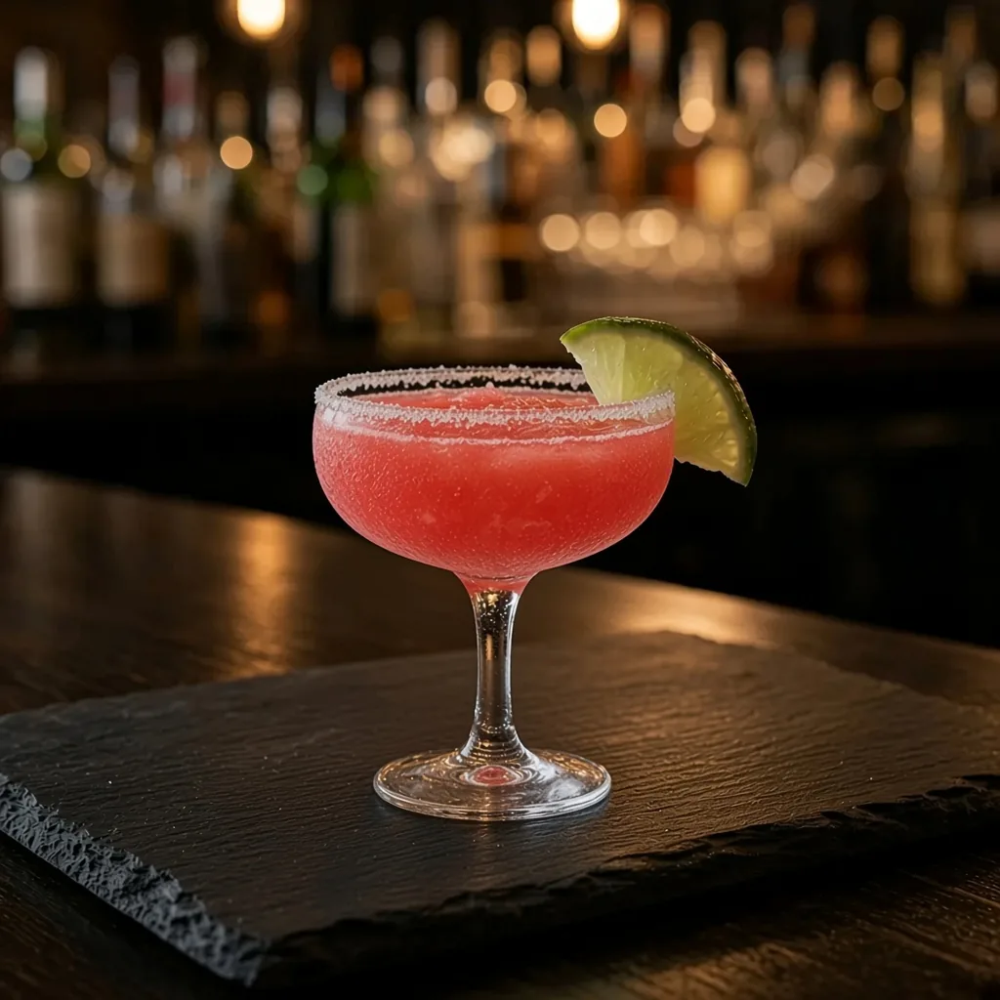
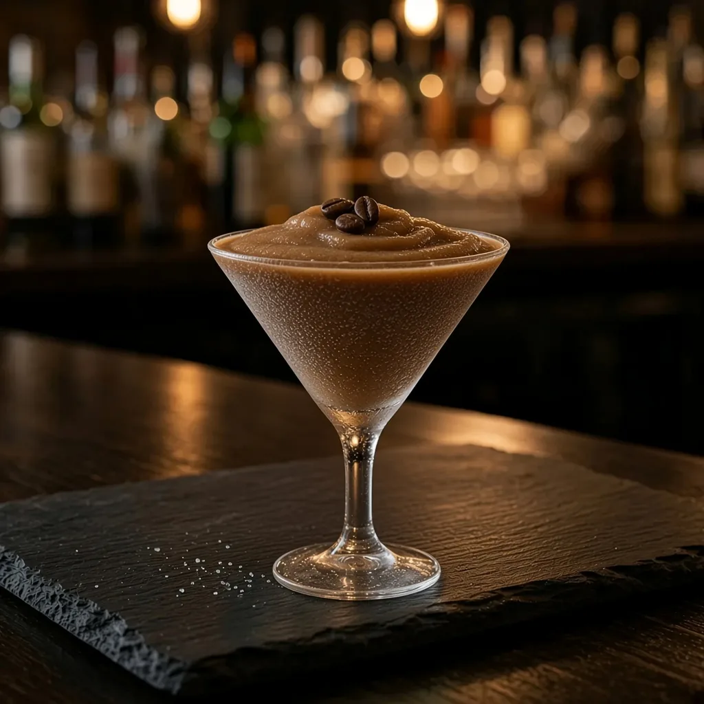
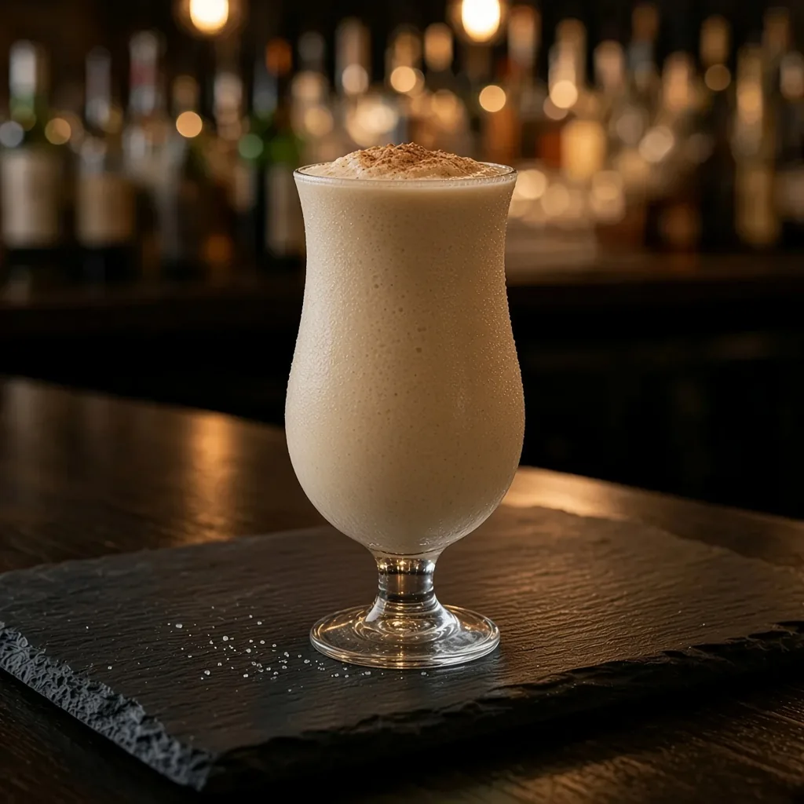
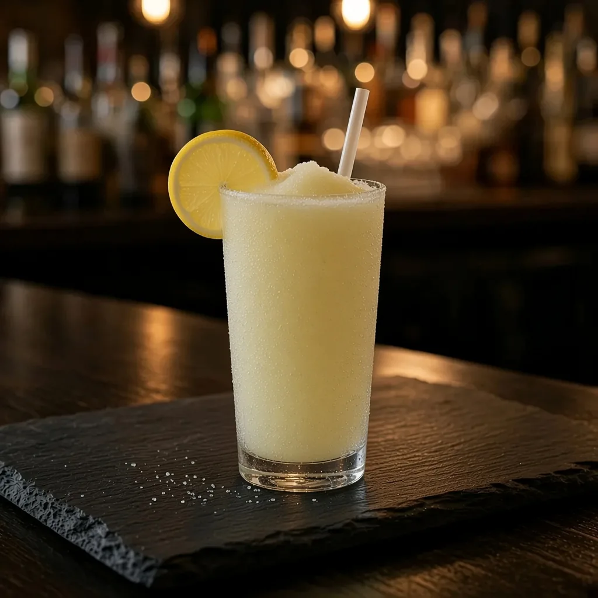

Home / Drinks / Frozen drinks
Frozen Watermelon Margarita
Frozen watermelon stands in for the ice, so the flavour does not get watered down.

Home / Drinks / Frozen drinks
Frozen watermelon stands in for the ice, so the flavour does not get watered down.

Leave out the tequila and orange liqueur and add 3 oz limeade.
Pour it, then start a room. Drinking is optional in every game.

Frozen Espresso MartiniCoffee, vodka and coffee liqueur as a frozen slush. Use coffee ice cubes for the best flavour. Frozen Aperol SpritzThe orange spritz, blended with ice for a hot day.
Frozen Aperol SpritzThe orange spritz, blended with ice for a hot day.

BushwackerA Caribbean chocolate-coconut milkshake with dark rum and coffee liqueur.
Frozen Vodka LemonadeVodka and lemonade concentrate blended with ice. Three ingredients.